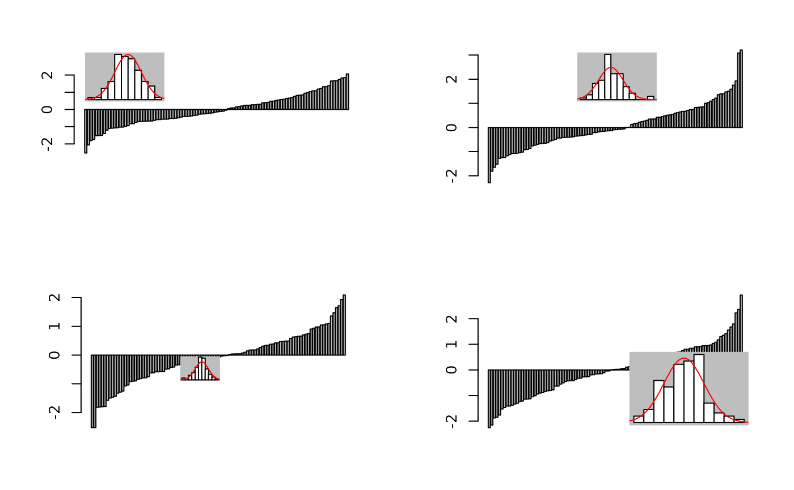

Add graphics to an existing plot
add.scatter.Rdadd.scatter is a function which defines a new plot area within an existing plot and displays an additional graphic inside this area. The additional graphic is determined by a function which is the first argument taken by add.scatter. It can be used in various ways, for instance to add a screeplot to an ordination scatterplot (add.scatter.eig).
The function add.scatter.eig uses the following colors: black (represented axes), grey(axes retained in the analysis) and white (others).
Usage
add.scatter(func,posi = c("bottomleft","bottomright","topleft","topright"),
ratio = 0.2, inset = 0.01, bg.col = 'white')
add.scatter.eig(w, nf = NULL, xax, yax, posi = "bottomleft", ratio =
.25, inset = 0.01, sub = "Eigenvalues", csub = 2 * ratio)Arguments
- func
an - evaluated - function producing a graphic
- posi
a character vector (only its first element being considered) giving the position of the added graph. Possible values are "bottomleft" (="bottom"),"bottomright","topleft" (="top"),"topright", and "none" (no plot).
- ratio
the size of the added graph in proportion of the current plot region
- inset
the inset from which the graph is drawn, in proportion of the whole plot region. Can be a vector of length 2, giving the inset in x and y. If atomic, same inset is used in x and y
- bg.col
the color of the background of the added graph
- w
numeric vector of eigenvalues
- nf
the number of retained factors, NULL if not provided
- xax
first represented axis
- yax
second represented axis
- sub
title of the screeplot
- csub
size of the screeplot title
Details
add.scatter uses par("plt") to redefine the new plot region.
As stated in par documentation, this produces to (sometimes
surprising) interactions with other parameters such as "mar".
In particular, such interactions are likely to reset the plot region
by default which would cause the additional graphic to take the whole
plot region. To avoid such inconvenient, add par([other
options], plt=par("plt")) when using par in your graphical
function (argument func).
Author
Thibaut Jombart t.jombart@imperial.ac.uk
Examples
data(microsatt)
w <- dudi.coa(data.frame(t(microsatt$tab)), scann = FALSE, nf = 3)
if(adegraphicsLoaded()) {
a1 <- rnorm(100)
b1 <- s1d.barchart(sort(a1), p1d.horizontal = FALSE, plot = FALSE)
h1 <- s1d.hist(a1, pgrid.draw = FALSE, porigin.draw = FALSE, pbackground.col = "grey",
plot = FALSE, ppoly.col = "white", ppoly.alpha = 1)
g1 <- insert(h1, b1, posi = "topleft", plot = FALSE)
a2 <- rnorm(100)
b2 <- s1d.barchart(sort(a2), p1d.horizontal = FALSE, plot = FALSE)
h2 <- s1d.hist(a2, pgrid.draw = FALSE, porigin.draw = FALSE, pbackground.col = "grey",
plot = FALSE, ppoly.col = "white", ppoly.alpha = 1)
g2 <- insert(h2, b2, posi = "topleft", inset = c(0.25, 0.01), plot = FALSE)
a3 <- rnorm(100)
b3 <- s1d.barchart(sort(a3), p1d.horizontal = FALSE, plot = FALSE)
h3 <- s1d.hist(a3, pgrid.draw = FALSE, porigin.draw = FALSE, pbackground.col = "grey",
plot = FALSE, ppoly.col = "white", ppoly.alpha = 1)
g3 <- insert(h3, b3, posi = "bottomleft", inset = 0.4, ratio = 0.2, plot = FALSE)
a4 <- rnorm(100)
b4 <- s1d.barchart(sort(a4), p1d.horizontal = FALSE, plot = FALSE)
h4 <- s1d.hist(a4, pgrid.draw = FALSE, porigin.draw = FALSE, pbackground.col = "grey",
plot = FALSE, ppoly.col = "white", ppoly.alpha = 1)
g4 <- insert(h3, b3, posi = "bottomright", ratio = 0.3, plot = FALSE)
G1 <- ADEgS(list(g1, g2, g3, g4), layout = c(2, 2), plot = TRUE)
g5 <- s.label(w$co, plot = FALSE)
g6 <- plotEig(w$eig, w$nf, psub = list(text = "Eigenvalues"),
pbackground = list(box = TRUE), plot = FALSE)
G2 <- insert(g6, g5, posi = "bottomright", ratio = 0.25)
} else {
par(mfrow=c(2,2))
f1 <- function(a){
opar=par("mar","xaxt","yaxt","plt")
on.exit(par(opar))
par(mar=rep(.1,4),xaxt="n",yaxt="n",plt=par("plt"))
hist(a,xlab="",ylab="",main="",col="white",proba=TRUE)
lines(seq(-4,4,le=50),dnorm(seq(-4,4,le=50)),col="red")
}
a <- rnorm(100)
barplot(sort(a))
add.scatter(f1(a),posi="topleft",bg.col="grey")
a <- rnorm(100)
barplot(sort(a))
add.scatter(f1(a),posi="topleft",bg.col="grey",inset=c(.25,.01))
a <- rnorm(100)
barplot(sort(a))
add.scatter(f1(a),posi="topleft",bg.col="grey",inset=.25,ratio=.1)
a <- rnorm(100)
barplot(sort(a))
add.scatter(f1(a),posi="bottomright",bg.col="grey",ratio=.3)
par(mfrow=c(1,1))
s.label(w$co)
add.scatter.eig(w$eig,w$nf,posi="bottomright",1,2)
}
